| Polyomino | Surround Number |
|---|---|
| 1 | |
| 123 | |
| 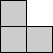 | 7555 |
 | 361 |
| 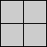 | 7 |
| 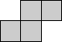 | 161 |
| 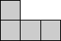 | 13355 |
| 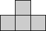 | 2794 |
| 778 |
For example, the surround number of a cross is 2, the tiling below and its mirror image:
Which positive integers are the surround numbers of some shape? In particular, is 3 a surround number? What are the surround numbers of the small polyominoes? What is the surround number of an m x n rectangle? For what other families of polyominoes can we compute surround numbers?
Owen found a general formula for the surround number of an m×n rectangle. It's pretty complicated. An n×n square has surround number 2n2-1. For n ≥ 2, an n×1 rectangle has surround number (n4+22n3+105n2-56n-8) / 4. For n ≥ 3, an n×2 rectangle has surround number (n4+32n3+344n2+768n+400) / 16 if n is even and (n4+32n3+278n2+656n+361) / 16 if n is odd.
Here are some polyominoes with surround number 3, and the people who found them:
| Polyomino | Author |
|---|---|
| 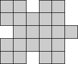 | Erich Friedman |
| 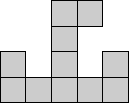 | Brendan Owen |
| 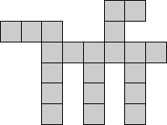 | Andrew Bayly |
| 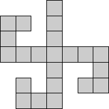 | Joe DeVincentis |
Here are the surround numbers of some small polyominoes:
| Polyomino | Surround Number |
|---|---|
| 1 | |
| 123 | |
| 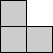 | 7555 |
| 361 |
| 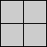 | 7 |
| 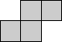 | 161 |
| 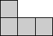 | 13355 |
| 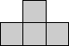 | 2794 |
| 778 |
Here are the smallest polyominoes with a given surround number. These are all due to Brendan Owen.
|
|
This sequence of values of the smallest area polyomino to have surround number n: 7, 1, 5, 9, 8, 9, 9, 4, 8, 7, 9, 9, 9, 9, 8, 9, 6, 9, 8, 8, 9, 8, 8, 7, 9, 8, 7, 8, 8, 9, 8, 8, 9, 9, 8, 9, 9, 9, 9, 8, 9, 6, 8, 9, 10, 9, 9, 8, 6, 7, 8, 8, 8, 9, 8, 9, 9, 9, 10, 9, 9, 8, 9, 9, 9, 9, 9, 9, 9, 8, 9, 9, 7, 8, 8, 9, 9, 7, 8, 7, 9, 9, 9, 9, 9, 9, 8, 9, 9, 9, 9, 9, 9, 9, 8, 9, 9, 8, 9, 9, 9, . . . is now sequence A047875 of the Encyclopedia of Integer Sequences.